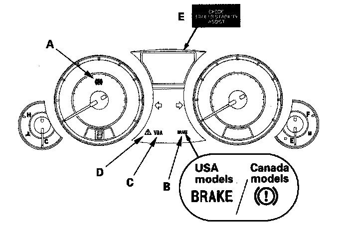

General Troubleshooting Information
General Troubleshooting InformationSystem Indicator
This system has four indicators and one warning:
^ ABS indicator (A)
^ Brake system indicator (B)
^ VSA indicator (C)
^ VSA activation indicator (D)
^ Trailer stability assist warning (E)

When the system detects a problem, it will turn the appropriate indicators on or warning indicate.
Depending on the failure, the VSA modulator-control unit determines which indicators are turned on or warning indicate.
When the system is OK, each indicator comes on for about 2 seconds after turning the ignition switch ON (II), then goes off.
ABS Indicator
The ABS indicator comes on when the ABS function is lost. The brakes still work like a conventional system.
Brake System Indicator
The brake system indicator comes on when the EBD function is lost, the parking brake is applied, and/or the brake fluid level is low.
VSA Indicator
The VSA indicator comes on, when VSA function is lost.
VSA Activation Indicator
The VSA activation indicator blinks, when the VSA function is activating. The VSA activation indicator comes on, when the VSA is turned OFF by using the VSA OFF switch, or the VSA function is lost. The VSA activation indicator is on until the steering angle sensor center point writing is done.
Trailer Stability Assist Warning
Trailer stability assist warning comes on, when brake light relay has malfunctioned or when VSA function is lost.
ABS, VSA Indicators, and Trailer Stability Assist Warning go off
Each indicator or warning will go off after a problem goes away, but the timing which the VSA modulator control unit turns off the indicators or warning varies between DTCs.
^ DTC 61, 62:
The indicators go off automatically when the system returns to normal.
^ DTC 11, 13, 15, 17, 21, 22, 25, 26, 27, 31, 32, 33, 34, 35, 36, 37, 38, 45, 46, 47, 48, 54, 59, 65, 66, 67, 68, 69, 72, 73, 74, 75, 76, 81, 84, 91, 92, or 97 * *:
The indicators stay on until the ignition switch is turned OFF whether or not the system returns to normal.
* : There are some cases that the indicators stay on until the vehicle is driven after the system returns to normal.
* * : There are some cases that the indicators go off automatically when the system returns to normal.
^ DTC 12, 14, 16, 18, 51, 52, or 53:
The indicators stay on until the vehicle is driven after the system returns to normal.
Diagnostic Trouble Code (DTC)
^ The memory can hold up to 10 DTCs. However, when the same DTC is detected more than once, the more recent DTC is written over the earlier one. Therefore, when the same problem is detected repeatedly, it is memorized as a single DTC.
^ The DTCs are indicated in the order they occur.
^ The DTCs are memorized in the EEPROM. Therefore, the memorized DTCs cannot be cancelled by disconnecting the battery. Do the specified procedures to clear the DTCs.
Self-diagnosis
^ Self-diagnosis can be classified into two categories:
- Initial diagnosis: Done right after the ignition switch is turned ON (II) and until the ABS and VSA indicators go off.
- Regular diagnosis: Done right after the initial diagnosis until the ignition switch is turned OFF.
^ When the system detects a problem, the VSA modulator-control unit shifts to the fail-safe mode.
Kickback
The pump motor operates when the VSA modulator control unit is functioning, and the fluid in the reservoir is forced out to the master cylinder, causing a kickback at the brake pedal.
Pump Motor
^ The pump motor operates when the VSA modulator control unit is functioning.
^ The VSA modulator-control unit checks the pump motor operation during regular diagnosis when the vehicle is driven over 10 mph (15 km/h) and at 19 mph (30 km/h) the first time after the ignition switch is turned ON (II). You may hear the motor operate at this time and feel some vibration, but it is normal.
Brake Fluid Replacement/Air Bleeding
Brake fluid replacement and air bleeding procedures are identical to the procedures used on vehicles without the VSA system.